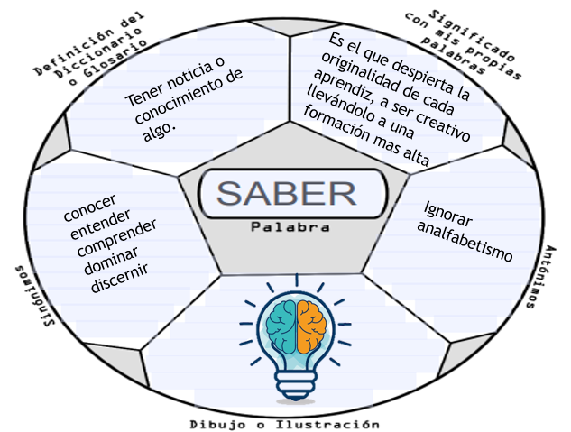
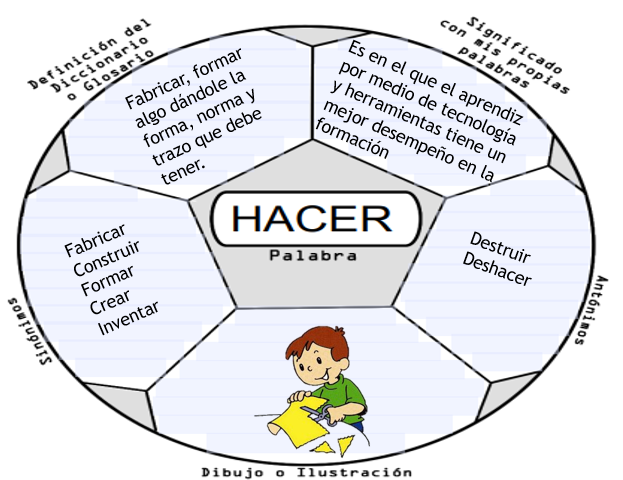
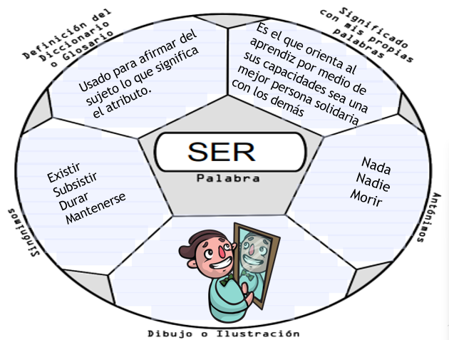

La Formación Profesional Integral es el proceso mediante el cual la persona adquiere y desarrolla de manera permanente conocimientos, destrezas y aptitudes e identifica, genera y asume valores y actitudes para su realización humana y su participación activa en el trabajo productivo y en la toma de decisiones sociales.
| OBJETIVO 1 (SABER) | OBJETIVO 2 (HACER) | OBJETIVO 3 (SER) |
| Que se orienta hacia el desarrollo de la originalidad, la creatividad, la capacidad crítica, el aprendizaje por procesos y la formación permanente. | En el cual se involucra ciencia, tecnología y técnica, en función de un adecuado desempeño en el mundo de la producción. | Que se orienta al desarrollo de actitudes acordes con la dignidad de la persona y con su proyección solidaria hacia los demás y hacia el mundo. |
|  |  |  |